pydisasm from xdis
control_flow
I have a lot of material to get through it all. Time is going to be short. Some of what I have to say is very compact and abbreviated. I apologize in advance.
Therefore, if you can, I strongly recommend you follow along with this printed version if you are watching the video.
Please raise your hand if use have used Hex-Rays Ida Pro,
Ghidra or Binary Ninja?
How about using any of these to decompile Python bytecode to Python source text?
As far as I know, there is no support for Python decompilation in IDA Pro, Ghidra or Binary Ninja. In preparation for this talk, I spoke to one of the founders from one of these reverse-engineering tool makers who confirmed this. More generally, he says that all these kinds of decompiler tools which start from machine code are pretty bad when it comes to any interpreter that runs any bytecode.
Now please raise your hand if you have used uncompyle6, or decompyle3.
I’m the current maintainer and developer of uncompyle6, and decompyle3. I’m sorry for my really bad choice of project names.
This page shows github commit activity for uncompyle6 from 2012 to now (2024):
31 people have contributed to this open-source project, usually submitting one or two Pull Requests. These are greatly appreciated. But over the vast sea of time, I have been working on this largely by myself. My contributions are in the bottom left. The person who is ranked second in commits, moagstar, is to the right. I haven’t heard from him in a little over 7 years.
Back in 2016, I started this project on github from a "tar" of a copy of an archive from an obsolete version-control system. The code had been abandoned for about 5 years. And that accounts for the big gap at the left.
in 2018, i gave a talk at python conference. so you see another flurry of activity for 2018 in the middle of the graph.
this code works for python bytecode from the very first version in 1999 to python version 3.8 which is no longer current. it came on the scene a few years ago, but it is still supported and is still in use.
since this code is old and large, and python compilers have gotten more sophisticated, the code needs better technology to keep up with python. so i forked the code, refactored it, and reduced its size. that accounts for the drop off in activity you see on the right part of the graph from 2021 to now. the forked code goes under the name decompyle3. it only handles python 3.7 and 3.8.
a little fun fact: on the extreme right, you see a little uptick. that is me working on the code in preparation for this talk.
Unfortunately, even changes to decompyle3 weren’t aggressive enough to track changes to python bytecode and the python language. therefore, i have an experimental decompiler for python 3.8 to 3.10. towards the end, i will show a little bit of that.
That is me in the photo in this cartoon down at the bottom of the tower. Except I live in New York City, and I have been doing open-source work since 2000.
When not doing my day job, I have been writing open-source software. But now that I’m retired, I spend even more time on this.
So the code I’ve written in general has had plenty of time to spread around. If you have have software installed that matches any of the logos on the first line, then you have code I've written.
I don't have any cool logos for the software that I’m going to be talking about today. But the software used by the projects with the logos on the left, all use a CD-reading library, called with the logos on the left, use a CD-reading library, called "libcdio" that I started in 2000 and I still maintain it.
And I’m interested in other things like an open-source Mathematica, and debuggers. Most of the software I have written is GPL and I am a member of the Free Software Foundation.
High-level bytecode is very attractive for malware writers because it is portable, compact, and impervious to standard general-purpose analysis tools. A while back, a couple of people from Microsoft contacted me regarding a malware bot-net that was active on Microsoft Windows. The malware was written in Python 2.7. As I mentioned before, the standard analysis tools like Hex Rays or Ghidra, were of no use to them.
And the situation has been getting worse. Languages that use high-level byecode is not decreasing, The Python language and bytecode continue to change. Python’s generated bytecode has become more complex and harder to decompile.
Decompilers have been around since the dawn of programming languages in the early 1960’s.
However, the ideas I’m going to present here are somewhat new or little used, and represent my own personal research. The seeds of the ideas were buried in code going back 24 years. As I said, that code was abandoned for 5 years before I came across it. It took me a while to distill, correct, and expand upon the ideas embodied in the code. I’m not even sure I now have the final word on this.
There is theory and academic research for what I call general-purpose decompilers. These are programs that convert machine code into a pseudo-source code. Usually, the resulting language is not something that you can directly run through a compiler.
However, for languages that work off of high-level bytecode, like Python, Ruby, or Ethereum VM, there is very little general theory other than what I have written and talked about. The last talk I gave was 5 years ago, and much has happened since then.
There are systematic methods and tools for compiler construction. These are just some of the books you can find on amazon.com (since the 1970's).
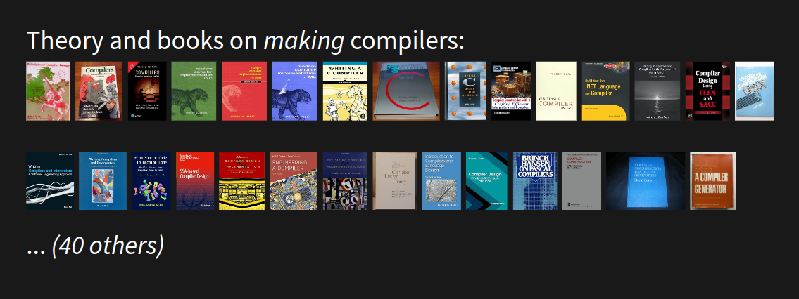I am sorry these images are not larger. Here is a summary of them from left to right. Some of these, have gone through several editions over decades. Other books come in several variations based on which programming language the book’s compiler algorithms are written in. Some specialize for a particular source or target language, or for a particular CPU architecture, or for a particular operating system. Some are aimed at writing interpreters, while others are aimed at advanced-compiler technology. Finally, some are no longer in print, because compiler-writing technology has evolved over time.
I think you get the idea that this is a well-trodden field.
None of the compiler books in the last slide mention "decompiler", as far as I know.[6]
So how about books on decompilers?
For decompiler construction, these are the only two I could find:
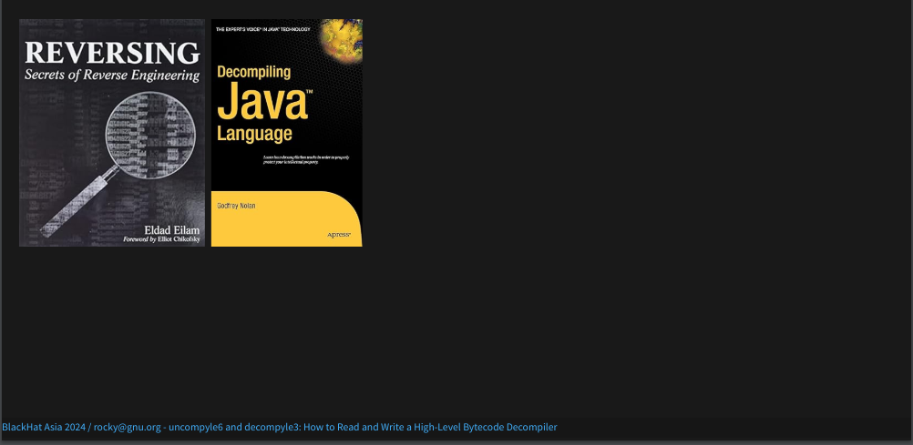Both are about a decade old. Neither is completely devoted to decompilers. Neither has gone through more than one edition. Does this mean that nothing has changed to the compilers and bytecode that are covered by these books in the last 10 years? I suspect and hope things have changed.
The topic of how to write a decompiler is about as rich, deep, and involved as the subject of how to write a compiler. In fact, a decompiler is a kind of compiler. Both take code expressed in one language and translate it to equivalent code in another language. Conventional compiler wisdom, however, needs to be adapted. You’ll get a small sense of this in this talk.
Because of the need for, but scarcity of, decompilers, AI might seem like a possible way to get high-level information from machine code.
For this talk, I recently looked at two Python decompilers that use machine learning. Can AI save the day?
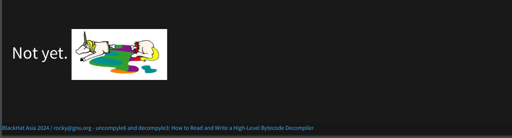Well... No, not yet. If you are interested in how to fix this, I can share my ideas afterwards.
Why am I here? Why am I giving this talk?
I’ve mentioned that general-purpose decompilers found in Ghidra, Binary Ninja, or Hex Rays are of little-to-no use for bytecode languages. In fact, I have been trying to raise awareness of bytecode decompilation as its own thing. And that’s a big reason I am here. As I have come to understand, bytecode decompilation works very differently from general-purpose decompilation.
Adding the modifier "General Purpose" is my own terminology. Right now, this distinction is not widely accepted.
A couple years ago, to raise awareness, I started a discussion in the Wikipedia "talk" section for "Decompilers". Unfortunately, there hasn’t been much discussion or movement on this.
I will soon describe the decompilation process, and I will introduce a rarely used, if not fully worked out, approach to decompilation. I treat decompilation as a human-language translation problem. In some ways, it can be like the kind of thing Google Translate does.
But the process we will go through, also follows a pattern similar to the process used by compiler front-ends, including the compiler for Python. It is described in all of the compiler books that I showed images of before. I am going to show this process adapted to perform decompilation. And I think this kind of adaption can be extended to create decompilers for other high-level bytecode.
At a more technical level, I hope you understand the phases of decompilation in these Python decompilers. This can be useful in submitting bug reports or fixing bugs.
A common misconception I see on reverse-engineering forums is confusion between decompilation and disassembly. As we go through the process, I think the differences will be clear.
For those of you are familiar with machine code, I think you will appreciate how high-level bytecode is different from machine code.
Finally, I think you will get some idea of the things decompilers can do and cannot do, not only in Python but other similar programming languages.
Before I get too deep into Python decompilation, I should say something about what it is. Briefly, decompilation starts with machine code or bytecode as input and produces source text as output. In the below slide, we have some Python. So where does the bytecode come in? That gets introduced in a second.
Let me first start off with some basics that go on when you run a Python program.
I’m going to use this simple program in the examples later.
The programs prints the output of calling a function named five(). I run the code using the usual Python interpreter called (CPython) and we get the expected output: 5.
When I do this, under the covers Python translates or compiles the program into an intermediate form called bytecode and interprets that internal form. In this particular case, that bytecode stays internal; it isn’t written out to disk.
Here are the bytecode bytes for the main routine. What these instructions do is: call for the creation of the function five(). In an interpreted language, there is no linker loader, like you have in the statically-compiled languages handled by general-purpose analysis tools. Instead, this kind of thing is done in running the code. After linking function five() into the main program, the five function is called and the function return value is passed to the built-in print() function which then displays the output shown.
The instructions for doing all of that stuff that I just said, takes up only 25 bytes!
For those of you who are familiar with machine code, 25 bytes to do all of this is awesome! There are metadata sections that are in the bytecode and that adds a bit of space too. I haven’t shown that here, but we will see some of this a little bit later.
Everything, overall, is very very compact. Part of the compactness is that the individual instructions themselves are pretty high level. And we’ll see some of that later as well.
As I said, the interpreter doesn’t run the source text directly, but instead runs bytecode. One implication of this, is that the source text doesn’t need to exist after byte-code compilation is done.
For certain kinds of Python source text, called "modules", the internal bytecode is written to disk automatically.
However, we can force the bytecode to get written to disk using
the Python compileall module. This is the
invocation.
A "bytecode file" is a built-in Python Code object which is serialized and then written out a file using a routine called "marshal". There is a little extra data added like the source-text file name, and bytecode version.
The short name of this file here is "5.cpython-38.pyc". The extension of a bytecode file usually ends in ".pyc" as it is here, or ".pyo".

Now that we have this bytecode object, I can run just the bytecode.
And again, I get 5.
With this introduction, we can now do our first Python decompilation using uncompyle6. The simplest invocation is: uncompyle6 with a bytecode file name, here "/tmp/five-moved.pyc". This is what we created in the last slide.
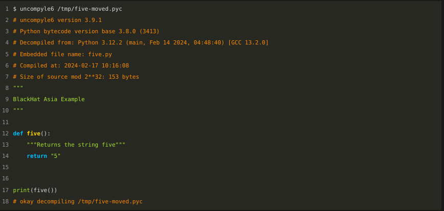
Lines in orange that start with # are comments. The
section at the top contains a little bit of the meta-data that I
mentioned before, which is stored in the bytecode file. It
is not part of that 25-byte instruction sequence that we
saw in hex before.
Each bytecode has a unique number for the bytecode variant. Here, it is 3413, and this variant covers Python version 3.8.
Major releases of Python typically can alter the programming language and/or the bytecode, and/or the way the source text gets translated.
Python bytecode varies more than any other bytecode that I have encountered. So when you find a tool or read a blog about Python bytecode, some of the details might only be relevant for a small number of versions around the time that the tool was developed or when the blog was written.
The drift in bytecode from the first release in 1996 to the most recent version, is about as dramatic as the drift from Latin to Italian, except that the drift happens much quicker.
The name of the bytecode file is "five-moved", seen in white at the top. The name of the original Python file is "five.py" and that is seen in orange, a little down from the top.
But if you ignore the orange comments in both the source Python and the reconstructed Python shown here, you will see that the two are very very close.
Let me show that side by side...
As you can see, the source and the decompiled code are pretty much the same:
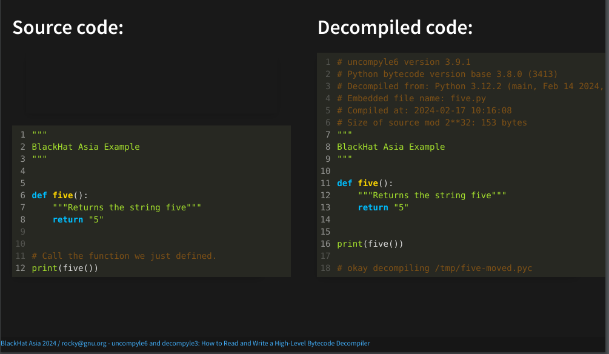People who are used to general-purpose decompilers, such as the ones that you find in Ghidra, or Hex Rays, are usually amazed at how close the two are. But this is one facet of high-level bytecode: a lot of source information like the variables names along with their types is preserved inside the bytecode.
The main differences between the two are the comments produced. Comments from the source text don’t appear in the reconstructed result. That is because those comments don’t appear anywhere in the bytecode.
Line 11 on the left doesn’t appear anywhere on the right.
One thing these decompilers do to increase the likelihood of getting exact source text is that they make an attempt to format the way standard formatters for Python work. We are more careful about this than other Python decompilers. But we don't always get the formatting exactly the same.
Now that we’ve given an example of Python decompilation, next we show how our decompilers work. And with this, you can then follow along the decompiler’s thought process.
One of the unique features of these decompilers, is that we provide a means for following along the decompilation process. Machine-language decompilers, even though they have a language-based affinity like we have, currently have no way to provide this level of detail.
Our decompilers go through five phases. This idea of running through phases or constructing a pipeline is also how most compilers work.
The phases are:
Don’t worry if you don’t understand some of the above steps. I will go over each step in more detail soon.
The scanning and parsing phases in the second and third step are similar to the beginning steps that a compiler uses to produce code. And this is the part that most differentiates these decompilers from other Python decompilers.
pydisasm
from
xdis
The first step in decompilation is carving bytecode bytes into bytecode instruction. Here, I will use the bytecode file that we generated earlier as input. And for demonstration purposes, I will use the standalone program, "pydisasm", from the cross-version disassembler package.

First you’ll see that, again, there are comments in orange at the top. And again, there is metadata about the bytecode:
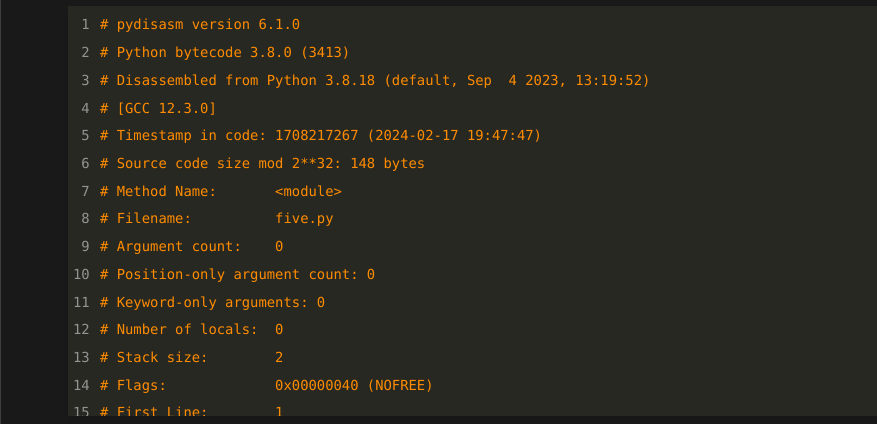In fact, the information on line 2 is exactly the same. For example, the version of bytecode that have here is, as before, 3413.
Now let’s get to the actual Python bytecode instructions:
I’ll go into this in more detail later. But the main thing to note here is that the first two instructions come from line one of the Python source text. Line one is indicated by the "1:" in white to the left.
In the part that is greyed out below the one colon, you may see a "6:". That is the beginning of the source text for line 6.
Each bytecode instruction consists of an operation name in blue. For example "LOAD_CONST", or "STORE_NAME". The operation name is then followed by an optional operand. These are listed in parentheses.
In the left panel, you see instructions that result from decoding bytecode a library routine from the xdis package. Because the the decompiler doesn’t call a command-line routine but instead uses a library API, it has a disassembly structure. On the left we are showing the print representation corresponding to the command-line utility.
From this disassembly structure, we need to massage a little and repackage the information to put in a form for parser input. This is shown in the right panel. Even though the two look almost the same, internally they are different structures. On the left is output of phase 1, and on the right is parser input in phase 2.
Parsing will be coming up in the next slide.
The input to the parser is a stream of "tokens". "Token" is the standard compiler term for the input atoms that are fed into a parser. A token is based on the operation name in blue. In fact, many times an instruction’s operation name and token name are the same. However, operand, the field in green to the right, sometimes has parts of it folded into the token name. Here are examples of this:
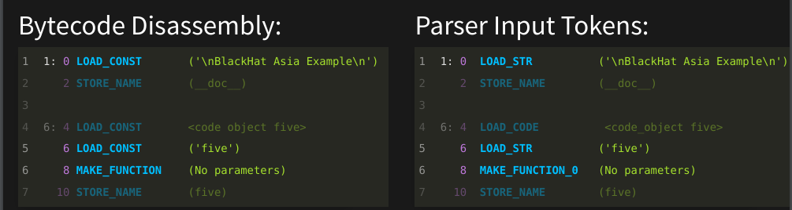The first instruction, "LOAD_CONST" is at offset 0. Offset numbers are in purple. The "LOAD_CONST" operation at offset 0 and at offset 6 have been specialized to "LOAD_STRing". In general, a "LOAD_CONST"' operand can be any Python constant literal, like boolean values True or False, or a constant tuple of string timezones, not just a string.
This aspect shows a difference between bytecode and machine instructions. In machine code, operands are typically register values which can be numbers, addresses, or parts of addresses. In Python bytecode, operands are arbitrary Python objects!
The other operation name that is different from its corresponding token name is "MAKE_FUNCTION". And you see that at purple offset 8 towards the bottom. It gets a suffix added to the name and becomes "MAKE_FUNCTION_0". Zero is the bytecode-encoded way to indicate that the function signature for this function doesn’t take any parameters. The instruction sequence instructions leading up to "MAKE_FUNCTION" would change depending on the number of parameters a function takes. So a parser needs this rough parameter information to be able to match or parse the instructions leading up to the "MAKE_FUNCTION".
In the last slide, we showed the first two phases which turned bytecode bytes into bytecode instructions, and then into a stream of tokens. The process next of scanning and parsing, that I will show now, will look familiar to those who have developed compilers. But that is a niche market, so I suspect that for many of you, this will be new. If things go too quickly, you may find some of this explained in one of those compiler books of the images I showed earlier.[7]
To simplify things, we will focus on just the source text from the very first line. Even though this is a small part of the code, it covers all of the basic concepts very well.
The companion materials has more detail if you want to see more complex examples. But in order to run, it helps to walk first. So let's start out with first line of the Python program. It was just a simple Python docstring shown in green at the top.
And let's start out with the first token.

Note that we just use the token name "LOAD_STR". The string value isn’t relevant in parsing.
That one instruction, all by itself, is the complete representation in bytecode for a particular Python expression! Here, it would be what Python will produce for a literal string expression, "Blackhat Asia Example", with nothing else.
For those of you who are familiar with programming-language systems that compile to machine code, again this is strange. In machine code, you rarely have one instruction fully covering one source-code expression. That's what makes this high-level bytecode.
Of course, most Python expressions require more than one instruction to represent them in bytecode.
Because "LOAD_STR" is a complete expression, the parser matches that single token and emits a "grammar reduction rule". This is the "expr colon colon LOAD_STR" you see here. This line is written in Backus-Naur Form. You will see this notation used in both Python's grammar specification and its Abstract Syntax Tree specification. More generally, this is the way syntax is specified in most programming languages.
But the decompilers I've written also use grammars to do their work. And this is one of the 50 or so grammar rules for decompiling Python 3.8.
The word to the right of "::=" in yellow is called a grammar symbol . The ::= is pronounced "transforms into" because an "expr" grammar symbol can "transform into" a LOAD_STR token. But since we are working bottom up (or token up), the parser recognizes this reduction possibility only after the fact. So the recognition is from the right to left, or alternatively, from the token or, more generally, tokens and grammar symbols to grammar symbol.
In performing this reduction rule, the parser creates a simple tree created with the "expr" grammar symbol in yellow as a root node of this tree, and "LOAD_STR" token in blue is its single child. Now let's continue...
Below, I've just copied what we had before. Now let us get to the next bytecode instruction, "STORE_NAME".
A "STORE_NAME" instruction is one of the tokens that fully forms a "store" grammar symbol:
Although you won't find a "store" grammar symbol in a grammar for Python, you will find "Store" with a capital "S" appearing in Python's AST documentation. "Expr" with a capital E also appears in Python's AST.
When possible, we try to use the grammar-symbol names that are similar to the names that Python's AST uses. Overall, The two grammars have similarities at the top, but they have to be different and have to be different.
If instead of "STORE_NAME" we had "STORE_GLOBAL" , that would be another kind of instruction in the class of "store" grammar symbols. In English, think of how a noun could be one of many words, like "bike", "car", or "bus". Let’s say that "STORE_NAME" is like "bike" while "STORE_GLOBAL" is like "car". As far as a sentence goes, bikes and cars are both nouns; "noun" is the grammar symbol that they both belong to. The grammatical structure of a sentence does not change when you replace "bus" for "car" in any sentence.
To recap, we have now encountered two reduction rules. These are lines with yellow to the left.
After this second rule is encountered, the little graph that the parser has been building looks like this:
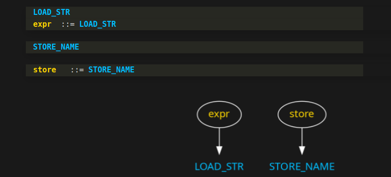We now have two little trees. So let's continue...
The parser has now matched "expr" and "store" grammar symbols, and built these trees for them.
After finishing with the "store" reduction rule, the parser now notices that we have matched "expr" and "store" grammar symbols in succession. The grammar I wrote for the decompilers dictate that when these two are seen in succession, that constitutes an assignment statement. So another rule triggers:
And the two trees that we had before are joined:

Continuing, an assignment statement is a kind of statement. And we have a grammar rule to indicate that.
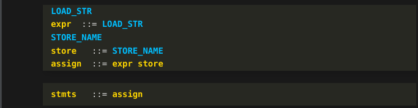Notice that after seeing the second token "STORE_NAME" in blue from early on, we kicked off a flurry of reduction rules. This kind of thing happens in bottom-up parsers when you get to the end of the token stream. It is like a detective story where, in the last couple of pages, all of the loose fragments and mysteries of the story from the very beginning are finally wrapped up.
Here is the final tree:
And now let's see how this is shown as ASCII debug output...
This is an ASCII representation of the graph from the last slide:
It has more information shown than we saw in the graph. That is because we are also showing token attributes in addition to the token names.
For example, we now see instruction offsets and instruction operand values.
All of this is great, but recall that we didn’t actually have an assignment statement at the top of the source code. Instead, what we had was a docstring. However, docstrings are implemented in Python by creating a special kind of assignment to string variable with that funny name: "__doc__".
So where does this get changed into something more familiar?
Phase 4 takes the parse tree we just created and transforms that into an abstract syntax tree. We look for tree patterns like this special kind of assignment statement. When the process finds something of interest that matches, that part of the tree is replaced. In a sense, we are "abstracting" the specifics we found into something that is more the way the Python programmer wrote the program.
Strictly speaking, we don't have to do this here, and sometimes this kind of thing can be a difference between the reconstructed and the original source text. However, If you find Python source text that looks screwy or isn’t even valid Python, what may be going on is that this kind of transformation isn’t being detected.
Notice that we have also simplified the tree. We no longer have grammar symbols "expr" or "store".
We could have tried to detect docstrings earlier, but that would have been messier.
And finally we get to that actual source-text creation. The source text is created by traversing this AST, calling routines based on the name of the grammar symbol. Here, the grammar symbol is "docstring" in yellow.
To simplify the conversion of the AST to a source string, there is a custom domain-specific language or DSL used. This DSL is described here in the uncompyle6's project wiki.
You have now successfully completed the first part of the talk which gives an overview.
I next go over disassembly in a little more detail, and introduce a new idea for Python decompilers. This uses some advanced compiler technology.
I’m going to focus a little more on disassembly for one important reason: There aren’t good decompilers for the most-recent Python-bytecode versions. And that is likely to continue forever. So the reality is: you may have to understand bytecode malware from a disassembly listing.
There is a disassember in the standard Python Library called dis. Most novice decompilers use this— it's the first thing that comes to mind. But that has some serious limitations. The biggest limitation is that it can only disassemble code for a single Python version, the version that is runining the decompiler. If you are running the latest version of Python, such 3.12, but the bytecode you want to analyze is from an earlier version, like bytecode from 2.7, then you are out of luck. Malware written in Python tends to use older versions of Python. This was the situation when Microsoft folks contacted me.
To get around this limitation, uncompyle6 and decompile3 use xdis — the "cross-Python disassembler".
xdis has a disassembler on steroids that I’m going to show now briefly.
Command-line options in yellow of the disassembler that I use in this invocation are:
In reverse engineering, most of the time you will not have the source text. There is, of course, no harm in asking for source text when it doesn’t exist. Now let's look at the output.
At the top of the disassembly output, again, is some metadata in orange. I went into some of this earlier, so I have elided this in the slide.
A piece of metadata that we saw implicitly before, was this value from this constants table:
Below, the first instruction at purple offset 0 is "LOAD_CONST". The string operand for this instruction came from index zero of this constants table. Now let's compare the assembly instructions:
If you are familiar with Python's dis output, this is similar. But there is more information. First, we see the Python source text, in green, for line 1. It is that Python docstring.
Below that, in white, we have, between vertical bars, the actual bytecode values. This is the first two of the 25 bytes that we showed in section Simple Python Program.
The first byte of the first instruction is hex 64. This is the opcode in Python 3.8, for "LOAD_CONST". The operand value is 0, but 0 is an index into that orange constants table above.
In the second instruction, we see something interesting happening off to the far right... This is after the parenthesized operand value, __doc__ in green. There is additional text — an assignment statement that starts in white:
__doc__ = 'BlackHat Asia Example'
Here, the disassembler is describing the combined effect of the first two lines. As I mentioned before, this is how Python implements docstrings.
Here is a more complicated example:
Companion materials explain this in more detail.
But don't get confused between disassembly and decomplation. Even though there is some higher-level interpretation, what we have here is a disassembly. Internals of the interpreter are exposed. For example, the "Top of Stack" or "toss equal" refer how the interpreter works. And the "POP_TOP" instruction which is greyed out, just below the last CALL_FUNCTION, has no corresponding meaning in the source code.
Disassembly is easy and straight-forward. Decompilation is hard. However, decompilation usually starts out with a disassembly of the bytecode.
However awesome the disassembler shown in the last slide is, it has limitations. Here is an example of something that disassembly can't reconstruct.
The disassembler is great with code that doesn't have jumps in it. But once we have jumps, like we have in the highlighted instructions, a disassembler has to stop combining instructions.
With each new Python release, control flow decompilation has become increasingly more difficult. Nowadays, about 1/3 of the issues raised in the decompiler bug trackers are related to control flow.
Grammars and the grammar-based approach we use, however, can naturally parse nesting and sequencing control structures quite well. So having a methodical way to characterize control flow that fits into the decompiler parsing can give more precision and accuracy that is not available in general-purpose decompilers
I won’t say much about how uncompyle6 and decompile3 handle difficulties that arise in disambiguating control-flow patterns.
Instead, I will be using the approach in an experimental decompiler I’m working on. Below, is the AST from this experimental decompiler.
The tokens in white: "BB_START", "BB_END", "SIBLING_BLOCK" and "BLOCK_END_JOIN" are pseudo tokens. They get inserted by a special control-flow process that I will show, briefly, next.
By the end of those slides, I hope you will understand a little about "Basic Blocks " that you see this in orange. "BB" in the token name is an abbreviation for "Basic Block". I hope you also get some idea of what "SIBLING" and "JOIN" mean in the token names, and what "Dominator" means in the orange operand.
Let’s now consider this simple Python program to count the number of 1 bits in a positive integer. If you are interested in algorithms, you might find this code interesting:
But the only thing that concerns us when thinking about the control flow, is that it is a program with the following characteristics.
Nested inside the main body of code is a while loop
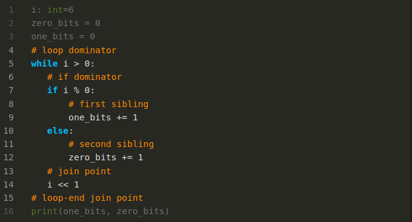But nested inside the while loop there is an if/then/else statement. And there is one more nesting level. the then and else parts of the if. In contrast to the above nesting, we have more than one item at the same nesting level. Even though the two blocks are at the same nesting level, the they are distinct and separate. In some programming languages like Java and JavaScript, variables declared in each block would be in different scopes.
What we want to do to make parsing easier is detect this nesting level, or rather more precisely, the scope. And mark scope boundaries inside the instruction sequence.
That brings us to these orange comments:
These capture what I just said. But I’m doing this in the source text rather than in the bytecode-instruction sequence. Note that we need to mark both the beginning and the end of sequenced and nested regions.
Now suppose that instead of an orange comment with the word "dominator", we had a non-branching instruction. To get to any instruction in the same scope or a nested block scope, you have to pass through that "dominator" instruction. It acts as a gatekeeper for a group of instructions.
Similarly, in order get to any instruction in the same scope or a nested scope that follows, you have to pass through the matching comment that says "join".
So now, let’s look at how the Python interpreter sees things...
control_flow
Here is the control flow reconstructed from the bytecode instructions for that Python text.
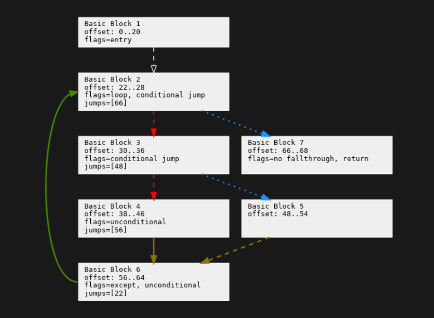This graph reconstruction comes from the Python control_flow project. I created this project to perform more accurate and faster decompilation of Python control-flow structures. However, this project can also be used for other kinds of Python bytecode control-flow analysis.
First, instructions are broken into "Basic Blocks". A Basic Block is straight-line code. There are no jumps into the middle, only to the beginning of the block. If there is a jump anywhere in the sequence of instructions, it has to be at the last instruction.
I don’t have time to describe the text in the boxes or what the colors and line styles mean. For that, look at companion materials.[8]
Here, we have the control-flow graph from before, but now altered to show dominators regions and dominators. This graph comes out of a later phase of the "control-flow" project. There is a lot going on here that I don’t have time to explain. See companion materials for this.
But let me introduce the terms "Dominator Region" and "Dominator". The easiest term to explain is "Dominator Region". This is just another term for "scope" described when showing the source text. But it is a property that is computed on a directed graph, or more precisely a control-flow graph like this. This property is used quite a bit in the compiler data-flow analysis. See books on advanced compiler optimization for algorithms on how to get this information.[9]
The easiest term to explain is "Dominator Region". This is just another term for "scope" described in the last slide. But it is a property that is computed on a directed graph, or more precisely a control-flow graph like this. This property is used quite a bit in the compiler data-flow analysis. See books on advanced compiler optimization for algorithms on how to compute this.
What does the "dominator" part of "dominator region" mean? A dominator block is a block that you have to pass through from the start of the program to get to anything in its scope or a scope nested underneath it. In other words, the instruction or block dominates other instructions or blocks underneath it. (See [10] for examples worked out in this graph.)
The darker the color a block is, the more nested it is inside the other block regions it is. So block 3 is nested or dominated inside block regions 2 and 1.
The upside-down house shape shows a join point, which is the other end of a dominator region. It is where a scope ends.
I am sorry I am talking fast and I am glossing over details. For those of you who have been taking pictures, this is the slide you should be take a photo of! The information and the way it is presented here is also relevant in general-purpose analysis tools.
But I hope you can see how a program can capture block nesting, and tell tell the difference between nesting and alternation at the instruction level. Those wacky pseudo-tokens inserted into the token stream in the "chained comparison" example, are there to convey this nesting and sequencing information in a way that the parser can understand and match blocks of code.
Now that I have given a whirlwind tour of bytecode decompilation for these Python decompilers, let me back up and put this in comparison with other work.
There are other decompilers for Python. They all start out with a disassembly, even the one I looked at that uses machine learning. Many build a tree—more or less—based on instructions from a disasssembly, and they all produce source text from that internal tree-ish structure.
However, they are a bit more ad hoc. None use the grammar-based approach here. The phases are fewer and a little less distinct.
General-purpose decompilers like you find in Ghidra are largely different. They live in a more complicated world. To be able to do things across a wider spectrum of machine languages and a wider spectrum of programming-language environments, they largely give up on the hope of noticing specific patterns of instructions, like we showed in the chained-comparison example. The ability to match specific patterns is what makes these decompilers produce extremely intuitive and accurate results and written in the programming language that the source text was also written in.
Control Flow, in General-purpose decompilers, is its own canned phase. This phase doesn’t take into account the specific target programming language that produced the code and the specific set of control-flow structures that the source language has.
Our control flow is intimately tied to the control flow for a particular Python version. When Python added a new construct like "async" co-routines in Python 3.5, it added a new kind of control-flow pattern match. Python has an extremely rich set of control-flow structures. I know of no canned control-flow-detection mechanism that would be able to cover all control-flow mechanisms that Python includes like the "else" clauses on "while", "for", and "try" blocks.
Our approach uses tokenization to facilitated parsing. This is similar to the lift phase that general-purpose decompilers often do after initial disassembly . In general-purpose decompilers, the lifting language is sometimes to LLVM or an LLVM-like language. In Python, our intermediate language is very much tied to Python bytecode. In general, that is true for all high-level bytecode decompilers. The intermediate code looks like the high-level bytecode. Also, this intermediate language drifts over time along with the language and bytecode drift.
I have shown how two of the best and most-popular Python decompilers work. Of course, these have bugs in them. But by understanding how they work, hopefully you may be able to:
It was John Aycott who first had the idea for using a grammar-based approach for a toy Python decompiler. Hartmut Goebels wrote the first version that covered a full version of Python. In fact, it handed several Python releases from Python 1.5 to about Python 2.3.
I would like to thank the organizers and program-selection committee for inviting me to give this talk, and then making sure that things went smoothly after it was accepted. Christina Garceau and Huisa are two of the many people, here.
I have many projects that are in need of attention. So I have to figure out which ones work to on. Therefore, when a talk like this is accepted, it is encouraging. It shows support for projects that I have volunteered a lot my time on, and have worked hard on for many years.
In preparation for this talk, I go over the software that I will be talking about add new features and remove bugs.
I would like to thank Phil Young for coaching me on this talk. I spend a much more time writing code, than I do speaking about the code I've written. Phil has been invaluable. He has had many great ideas for organizing and presenting this in a more lively, and audience-friendly way.
Stuart Frankel edited the talk, and turned some of this into English.
Also, I thank Lidia Giuliano for organizing and running the speaker-coaching program.
Finally, that you all for listening to me talk about this subject. I hope you all will use this information to produce great things in the future.
Here is additional information for where you can get even more detail about things I've said today.
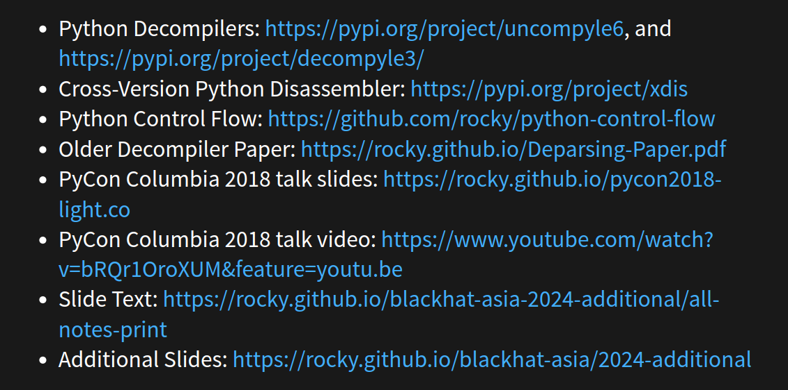Bye now, we're late again... (old clip from "The Adventures of Rocky and Bullwinkle". video has sound and is playable).
[1] This follows my talk on High-level Bytecode as seen via Python that was presented at BlackHat Asia 2024. Some small corrections and annotations have been made.
About the title: initially I pitched this as an "intermediate"-level talk, and assumed folks would understand Python Bytecode and how Compilers work. I also hadn't planned on describing myself at all. In the process of working out the talk, it became appearent that all of this material would need to be added in order to follow custom and make this more understandable across a wider audience. As a result, the level of detail that I could give had to be greatly reduced to fit in a 45-minute talk. The project wiki for uncompyle6 has more detail as well as an older paper on this decompiler. I have a draft of a newer paper which will appear at some point.
[2] The idea for this nice gag came from Philip Young.
[3] The programs in the images shown are:
[4] The books in the images shown are:
[5] The books in the images shown are:
[6] While I am familiar with many of these books, I haven't read all of them nor done a search of the index. If any of these do mention "decompiler", please let me know!
[7] For example, the Dragon Books cited in [4] describe this.
[8] About the colors on the arrows. Red is the first sibling of a set of alternatives. These come about not by an explicit jump instruction, but by falling through when not jumping in a conditional jump instruction. Fall-through "jumps" are shown in dashed lines. We have two in red and one in brown.
While a red arrow goes the first following block, a blue arrow goes to the second following block. Here, this always happens in a conditional jump instruction. Conditional jumps are shown as dotted lines. So all of the blue lines are also dotted. Solid lines are unconditional jumps. We have one solid green line for the looping jump, and one solid brown line at the bottom where the end of the then part jumps around the else part to the end of the if/then/else construct.
Brown lines show where two control flow paths meet. In the Python slide, we called this a "join" point; the compiler term for this is a "post-dominator" point.
[9] See Advanced Compiler Design and Implementation cited in [4] for example.
[10] To get to any instruction in the "count bits" program, you have to go through "Basic Block 1" which contains the first instruction of the program. That has the 3D box shape to indicate the block’s special role as a dominator block. Technically, a block dominates itself. When that is all it dominates, we don’t show the block in 3D. Only if it dominates another block do we decorate the block in 3D. A similar thing happens for a block getting a new color.
To run an instruction in either Block 4 or Block 5 in brown, you have to pass through the all instructions in the Block 3. 3D Block 3 then "dominates" Blocks 3, 4, and 5. But Block 3 is dominated by both lighter-colored 3D Blocks 2 and 1. The hierarchy of Dominator Blocks is capturing the nesting level in the "count bits" program. Notice that Blocks 3, 4, and 5 all have the same shade of brown. This means they are all part of the same "dominator region", and have scopes under the scope of Dominator Block 3.
But notice Block 7 is a lighter tan color, the same color as Block 2, Therefore, you don’t have to go through darker-color Block 3 to get to Block 7. Although is possible by looping around to get there, that doesn’t have to happen. In contrast, to get to Block 7 you must go through the parent Dominator Block for that region, Block 2.